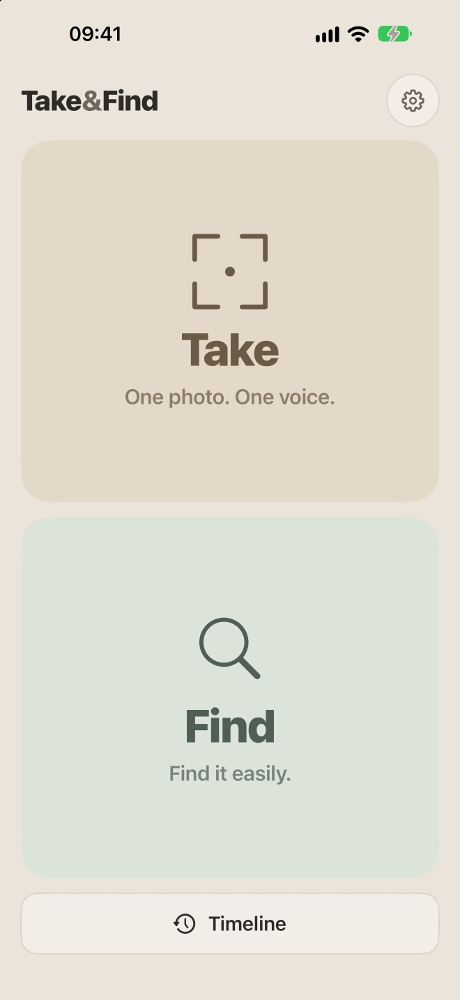
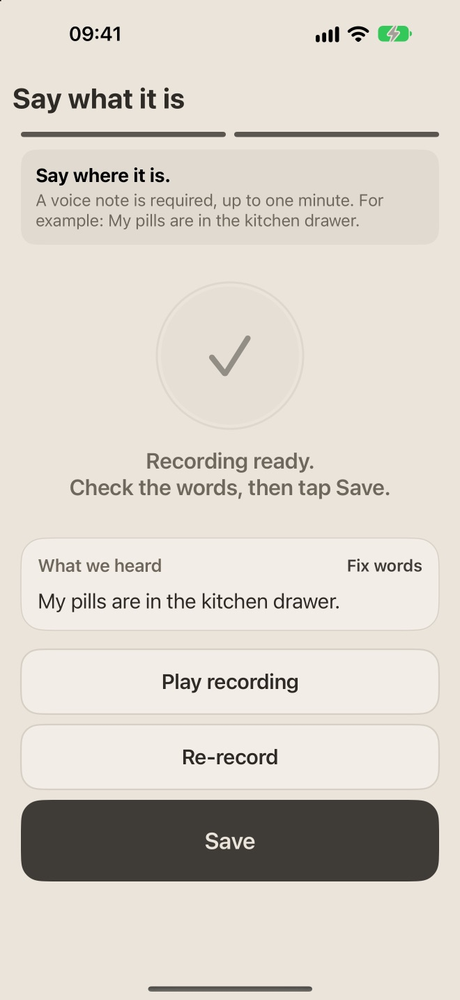
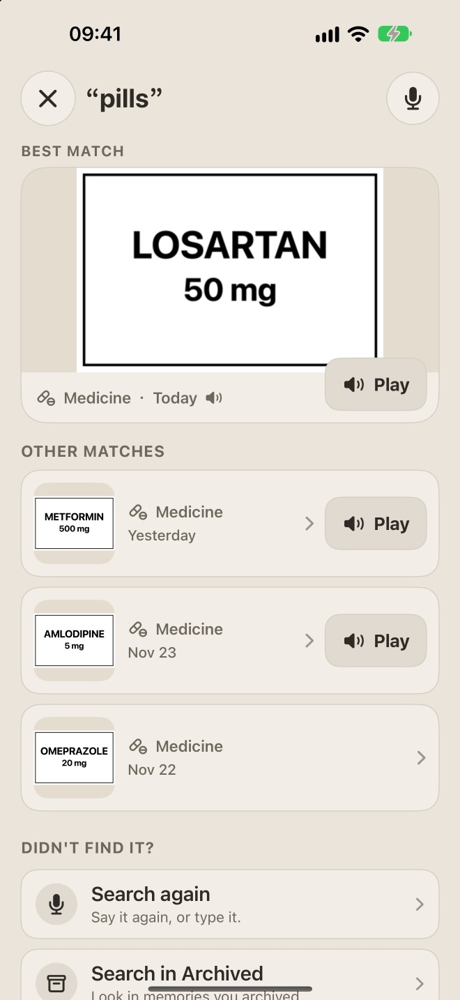
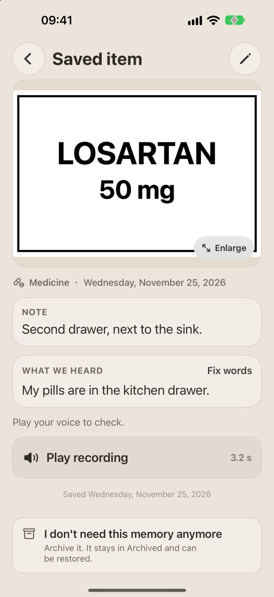

Take a photo
Point the camera at the item and tap OK when the photo looks right.
A simple memory aid for iPhone and iPad
One photo. One voice. Find it easily.
Take&Find helps you remember where everyday things are without creating an inventory, making a list, or remembering the name of the item.

Three simple steps
Large buttons and photos do most of the work. You do not need to organize a list or type a detailed description.
Point the camera at the item and tap OK when the photo looks right.
Record one short voice note, up to one minute. Listen to it before you save.
Tap Find, ask a question, and recognize the answer from the photo and your own voice.
A clear review before saving
Take&Find shows what it heard and lets you correct the words. The original recording always stays available.



Private by design
Take&Find does not require an account. It does not show ads or use tracking. Photos, recordings, notes, and search indexes remain on your device.
Speech recognition and text recognition run on the device. If you choose a backup, you control where the backup file goes.
Read the privacy policySimple pricing
Unlock unlimited memories with one $6.99 purchase. No subscription.
Questions
No. You can say something like “My reading glasses are on the kitchen counter.” Take&Find uses the photo, your words, and on-device recognition to help you find it.
Tap Fix words and type the correct words. Your original recording is not changed.
The core app uses on-device camera, recording, speech recognition, text recognition, storage, and search. Some initial speech assets and App Store purchases may require a connection.
No. It is a memory aid. It does not diagnose conditions, provide medical advice, or replace emergency or medical care.
Need help?
Read setup and permission help, or email support.